Материалы
Реставрация камня
Цена реставрации камня определяется исходя из объёма работ.

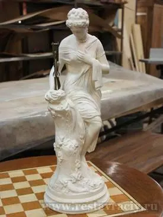
О чём рассказывает мастерская
- Мрамор реставрация
- Гранит реставрация
- Склейка камня
- Сувенир оникс
- Реставрация янтаря
- Реставарция искусственного камня
В материале мастерской
Фотографии и детали

 Открыть снимок у мастерской
Открыть снимок у мастерской 

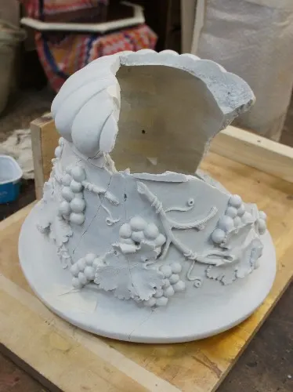
Открыть снимок у мастерской

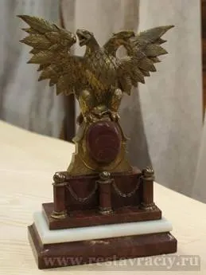
Открыть снимок у мастерской

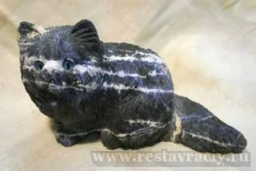
Открыть снимок у мастерской

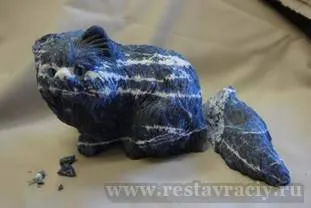
Открыть снимок у мастерской

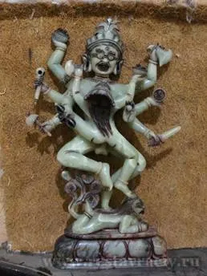
Открыть снимок у мастерской

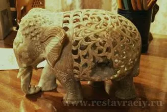
Открыть снимок у мастерской

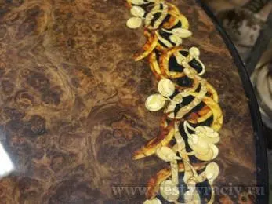
Открыть снимок у мастерской

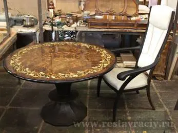
Открыть снимок у мастерской

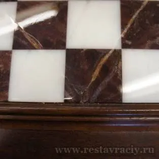
Открыть снимок у мастерской

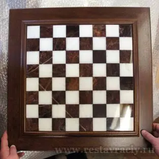
Открыть снимок у мастерской
Есть похожая вещь?
Подберите ракурсы для предварительной оценки.